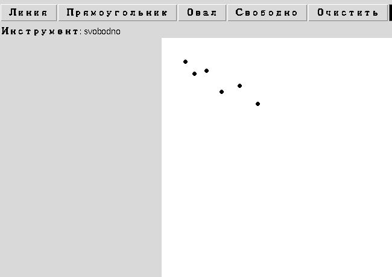

Я закончил рисовать! Первая полная программа
Последние штрихи первого прототипа — очистка холста и свободное рисование — и работающая программа целиком.
Я закончил рисовать!
Осталось добавить кнопку очистки холста и режим «свободного рисования» (карандаш) — для него точки рисуются на каждое движение мыши без привязки к начальной точке:
def ochistit_holst():
canvas.delete("all")
def vo_vremya_risovaniya(event):
if tekuschaya_figura == "svobodno":
canvas.create_oval(
event.x - tolschina, event.y - tolschina,
event.x + tolschina, event.y + tolschina,
fill=tekuschij_cvet, outline=tekuschij_cvet,
)
return
# ... остальные фигуры, как в разделе 18.5
<B1-Motion>. Раздел 18.14 показывает, как получить настоящий непрерывный штрих — соединяя каждую новую точку с предыдущей.Первая полная программа
Полная версия первого прототипа, включая исправленную отрисовку «черновых» фигур во время перетаскивания мыши, доступна отдельным файлом:
📄 projects/tkinter/paint-app/paint_app_basic.py

PaintApp (раздел 18.32).Сохраняйте id каждой нарисованной фигуры (canvas.create_* возвращает id) в список — и добавьте кнопку, удаляющую последнюю через canvas.delete(id). Раздел 18.24 разберёт эту идею как настоящую архитектуру.
Изучите модуль tkinter.filedialog и попробуйте добавить кнопку «Сохранить» — как минимум сохраняющую список нарисованных фигур в текстовый файл (глава 15). Раздел 18.30 покажет полное решение через JSON.
Итоги раздела
Что мы узнали
Canvas— виджет Tkinter для рисования линий и фигур по координатам; координаты растут вправо и вниз от левого верхнего угла.canvas.create_line/rectangle/oval(...)рисуют готовые фигуры по координатам.- События мыши (
<Button-1>,<B1-Motion>,<ButtonRelease-1>) отслеживают клик, перетаскивание и отпускание кнопки мыши. Scale— ползунок для выбора числа в диапазоне.- Палитра из нескольких похожих кнопок эффективнее строится циклом, чем вручную одна за другой.
- Это только первый прототип — дальше глава разбирает Canvas и архитектуру приложения куда внимательнее.